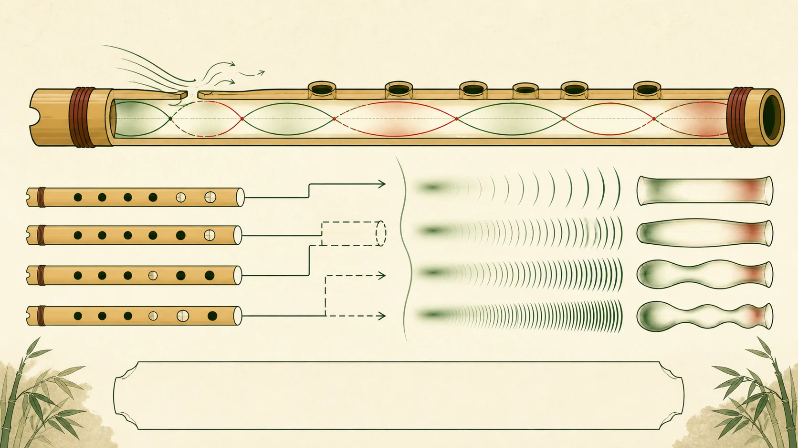

部分核實版權限制
研究領域
聲學與音律
從下列子題閱讀相關文章，或查找本領域已收錄的 19 筆來源。各子題的資料深度不同，頁內另列收錄狀況。
L2 · 已核實摘要18 個去重來源24 項核對紀錄
24 項已記錄核對的陳述 · 2845 字正文
本頁達到站內正文門檻，並附核對來源。層級反映資料覆蓋，不等於外部專家認證；引用前請核對原文。 來源數依站內規則去重，尚未逐一追查相互引用的依賴關係。
已核實專題
2 篇
相關來源
19 筆
研究論文 · 2025
Mechanism by Which Heat Treatment Influences the Acoustic Vibration Characteristics of Bamboo
Yuwei Liang、Lan He、Liang Zhang、Haiyang Zhang、Guizhang Jiang、Ruizhe Liu、Zhenbo Liu
聲學與音律樂器結構與製作
未核實開放取用
研究論文 · 2022
Effect of Environmental Humidity on the Acoustic Vibration Characteristics of Bamboo
Yuwei Liang、Lan He、Liang Zhang、Haiyang Zhang、Guizhang Jiang、Ruizhe Liu、Zhenbo Liu
聲學與音律維修、保養及健康樂器結構與製作
未核實開放取用
研究論文 · 2024-09-07
Acoustic Characterization of the Resonator in the Chinese Transverse Flute (dizi)
Xinmeng Luan、Song Wang、Gary Scavone、Zijin Li
聲學與音律樂器結構與製作
已核實開放取用
研究論文 · 2025-05-01
Acoustic Characterization of the Resonator in the Chinese Transverse Flute (dizi)
Xinmeng Luan、Song Wang、Gary Scavone、Zijin Li
聲學與音律樂器分類樂器結構與製作
部分核實只提供書目資料
研究論文 · 2023
Acoustical Analysis of the Chinese Transverse Flute (dizi) Using the Transfer Matrix Method
Xinmeng Luan、Song Wang、Zijin Li、Gary Scavone
聲學與音律錄音、數碼化及人工智能樂器分類樂器結構與製作
部分核實只提供書目資料
研究論文 · 1999-09-23
Oldest playable musical instruments found at Jiahu early Neolithic site in China
Juzhong Zhang、Garman Harbottle、Changsui Wang、Zhaochen Kong
聲學與音律歷史與文化樂器結構與製作
部分核實版權限制
研究論文 · 2024-05-15
Effect of Oil Heat Treatment on the Acoustic Vibration Performance of Bamboo
梁雨薇、何瀾、張梁、張海洋、蔣桂章、劉睿哲、劉鎮波
聲學與音律維修、保養及健康樂器結構與製作
未核實版權限制
研究論文 · 2018-12-01
Modal Analysis of the Input Impedance of Wind Instruments: Application to the Sound Synthesis of a Clarinet
P.-A. Taillard、F. Silva、Ph. Guillemain、J. Kergomard
聲學與音律錄音、數碼化及人工智能
部分核實只提供書目資料
研究論文 · 2001
Acoustic impedances of classical and modern flutes
Joe Wolfe、John Smith、John Tann、Neville H. Fletcher
聲學與音律樂器結構與製作
未核實版權限制
未核實版權限制
機構網頁 · 日期未載
Wind Instruments — Chinese Orchestra
Timbre and Orchestration Resource / ACTOR
聲學與音律樂器分類樂器結構與製作曲目、作曲及演奏實踐指法與演奏技法
部分核實版權限制
部分核實版權限制
部分核實版權限制
部分核實版權限制
未核實版權限制
未核實版權限制
未核實版權限制
機構網頁 · 日期未載
Dizi (Chinese transverse bamboo flute)
Vancouver Inter-Cultural Orchestra
聲學與音律樂器分類樂器結構與製作曲目、作曲及演奏實踐指法與演奏技法
部分核實版權限制
本篇視覺示意（非教學圖）
